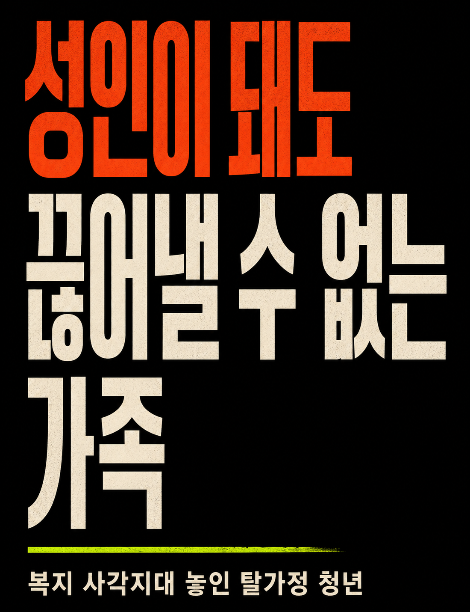
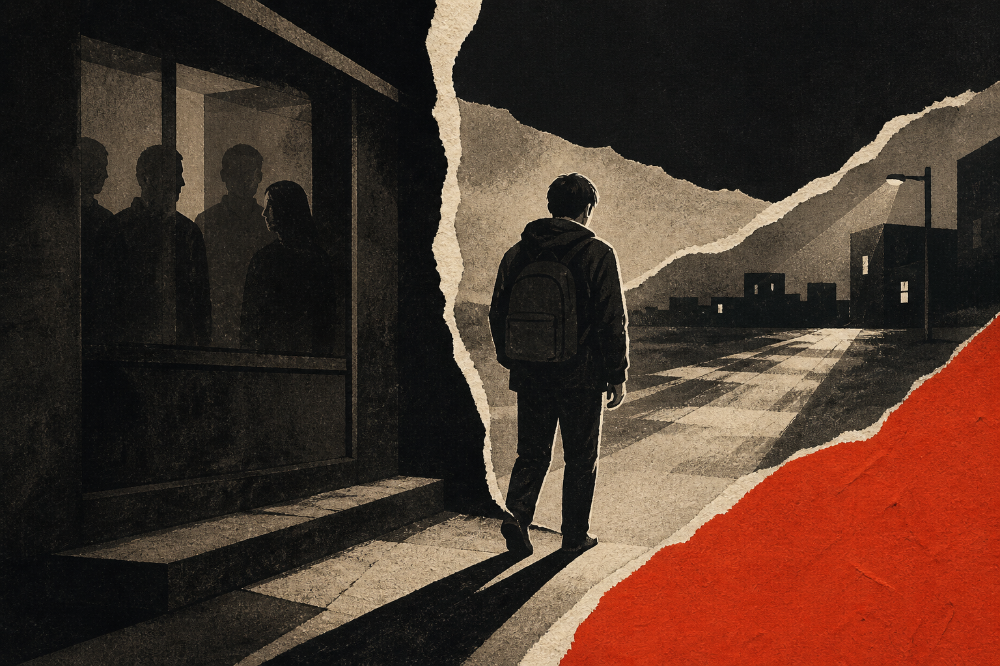
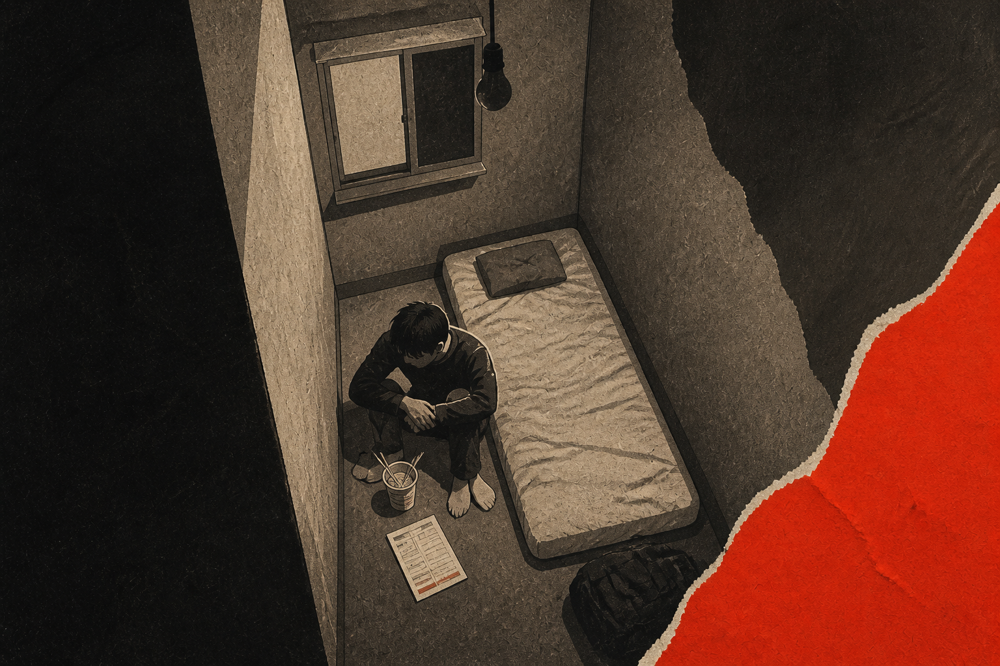
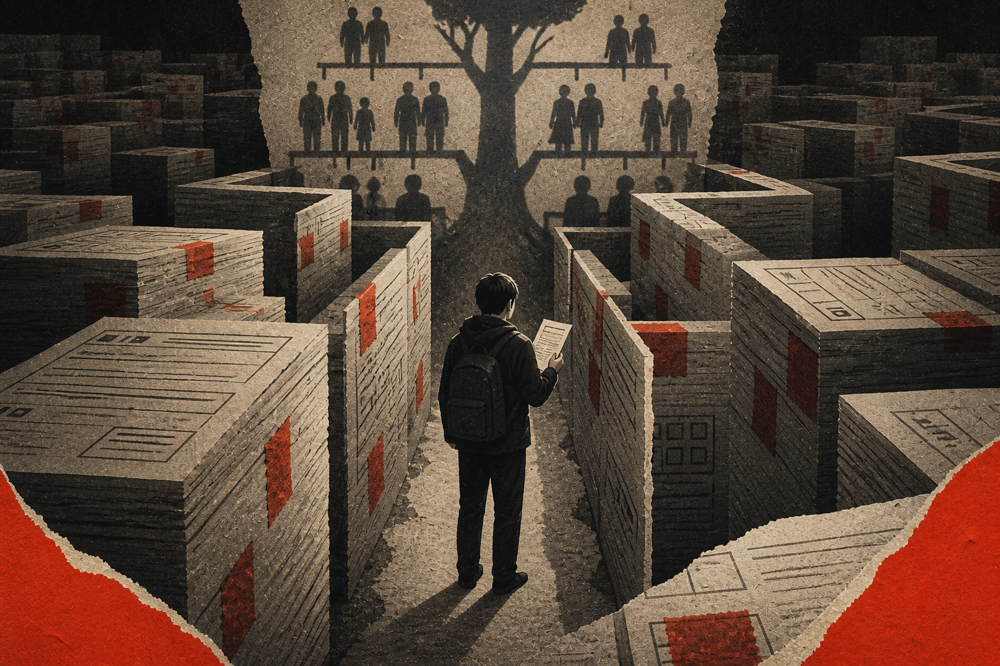
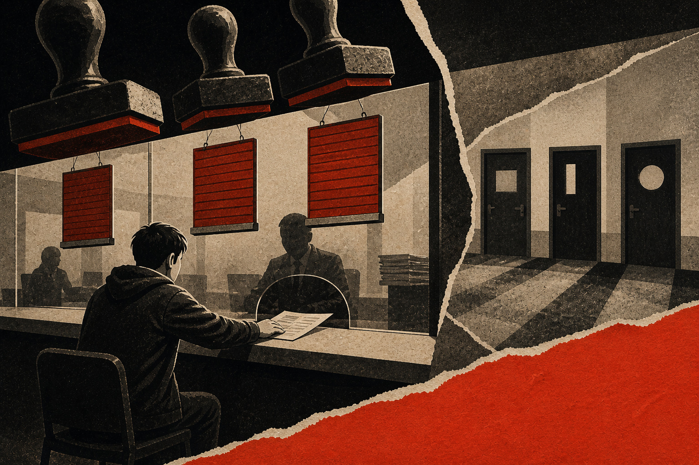
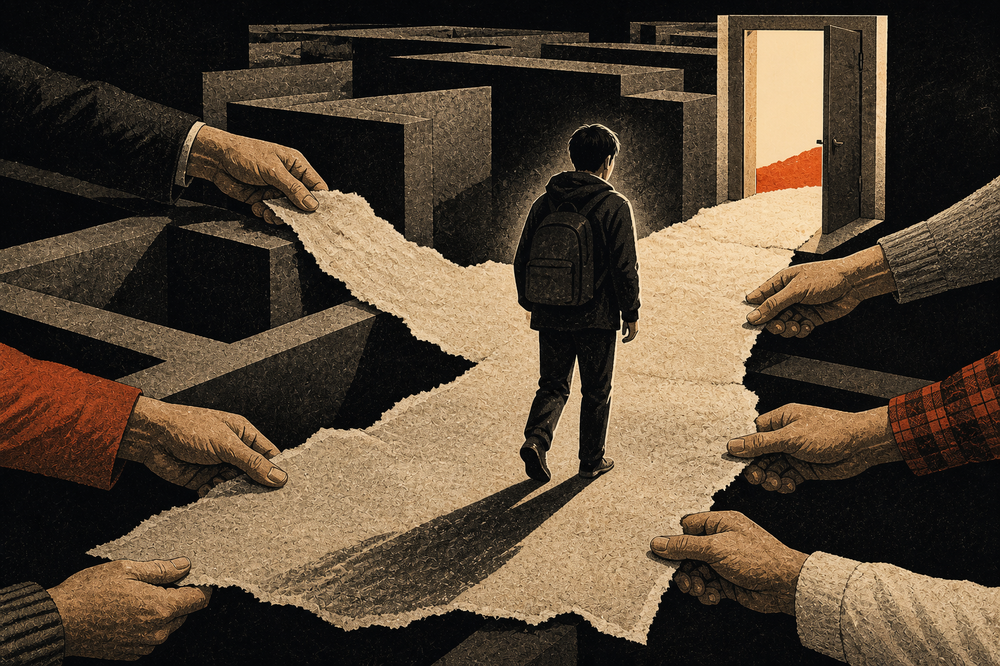

한모 씨는 17세에 처음 집을 나왔다. 대학 진학 뒤 아버지와 다시 살았지만 어린 시절부터 이어진 가정폭력이 반복됐다. 21세, 그는 또 한 번 가족을 떠나야 했다.
박선숙 씨 역시 경찰이 출동할 정도의 충돌 끝에 고시원 방 한 칸으로 몸을 피했다. 편히 잘 수도, 제대로 먹을 수도 없는 집에서 나오는 데 긴 준비 기간은 없었다.
탈가정 청년
복지의 기준에서 지워진 사람들

집을 떠났지만 서류는 떠나지 못했다. 폭력과 착취를 피해 나온 청년들은 왜 복지의 문 앞에서 다시 가족을 증명해야 할까.
PROLOGUE · 갑작스러운 탈가정
“원가정과 단절한 후 돈이 없어 고시원에 들어가 라면만 먹고 살았습니다.”
30대 여성 박선숙 씨는 가정 내 폭력과 방임, 경제적 착취를 피해 쫓기듯 홀로서기를 시작했다. 의지할 사람도, 준비할 시간도 없었다.
CHAPTER 01
탈가정은 가족과 교류를 유지하는 독립과 다르다. 폭력이나 착취를 피하기 위해 짧은 시간 안에 급박하게 이뤄진다.

한모 씨는 17세에 처음 집을 나왔다. 대학 진학 뒤 아버지와 다시 살았지만 어린 시절부터 이어진 가정폭력이 반복됐다. 21세, 그는 또 한 번 가족을 떠나야 했다.
박선숙 씨 역시 경찰이 출동할 정도의 충돌 끝에 고시원 방 한 칸으로 몸을 피했다. 편히 잘 수도, 제대로 먹을 수도 없는 집에서 나오는 데 긴 준비 기간은 없었다.
두 단어를 눌러 출발 조건의 차이를 확인해 보세요.
폭력과 불화를 피해 짧은 시간 안에 거처를 구합니다. 보증금·생활비·조력자 없이 원가정과의 접촉까지 끊기는 경우가 많습니다.
“제 선택과는 관계없이 일어난 일이었어요.”
17세에 경제적 곤란으로 한 차례 집을 나왔다. 다시 아버지와 살았지만 가정폭력이 반복됐고, 21세에 또 한 번 가족을 떠났다.
CHAPTER 02
보증금을 마련하지 못한 청년은 고시원처럼 저렴하고 열악한 주거로 밀려난다. 공과금과 통신비, 끼니도 동시에 흔들린다.

다가오는 사건에 선택으로 대응하세요. 모든 것을 지킬 수는 없습니다.
현금 4만 5천 원, 충전이 얼마 남지 않은 휴대전화. 오늘 밤부터 직접 선택해야 합니다.
급하게 구할 수 있지만 열악한 환경을 감수해야 한다.
공과금이 밀리고 통신비를 빌리는 위기가 이어진다.
도움을 청할 가족과의 단절이 경제적 불안을 더 키운다.
CHAPTER 03
장학금, 주거, 생계급여의 많은 절차는 부모의 존재와 협조를 전제로 한다. 실제 단절보다 서류상 가구가 먼저 판단된다.

나이 슬라이더와 조건을 움직여 제도의 문턱이 어떻게 달라지는지 확인하세요.
국가장학금을 받기 위해서는 부모 동의를 얻어 소득 구간을 산정해야 한다. 청년매입임대주택과 전세임대주택의 우선순위 역시 부모의 존재나 원가정 소득을 기준으로 삼는다.
국민기초생활보장제도는 가구 단위 지급이 원칙이다. 부모가 생계급여를 일괄 수령한 뒤 자녀 몫을 전달하지 않아도 탈가정 청년은 스스로 급여를 받기 어렵다.
단계를 눌러 확인하세요
동일한 가상 신청서를 세 지역에 제출해 보세요.

기사 속 “같은 서류를 제출해도 지자체에 따라 승인 여부가 달라진다”는 증언을 시각화한 예시입니다.
CHAPTER 04
개인의 실제 생계와 주거를 보고, 제각각인 세대 분리 기준을 바로잡아야 한다.
하나를 선택해 어떤 변화를 만들 수 있는지 확인하세요.

OUTSIDE THE FAMILY FRAME
“조사를 통해 탈가정 청년의 규모와 현실이 확인된다면, 이를 바탕으로 실효성 있는 정책을 요구할 수 있다.”김선기 신촌문화정치연구그룹 연구원 고대신문 원문 바로가기